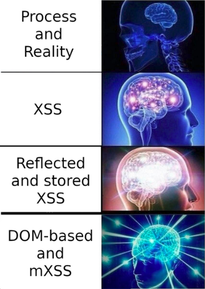
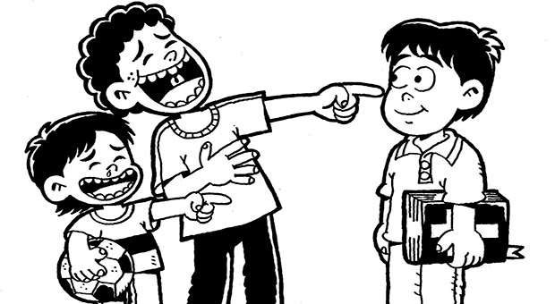
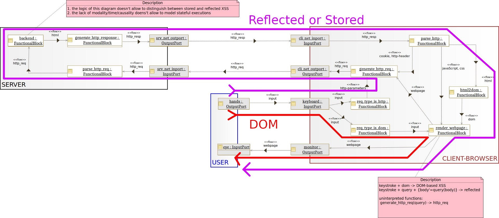
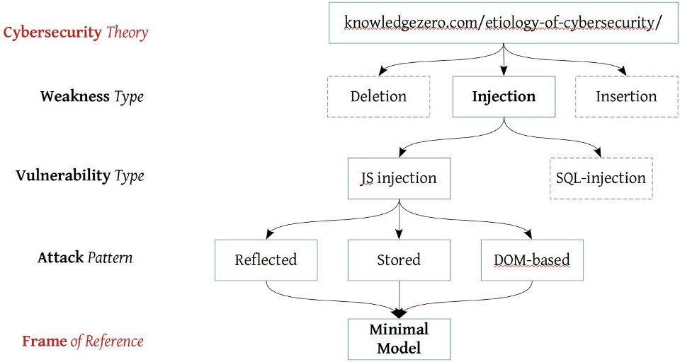
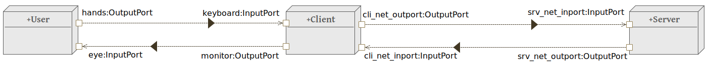
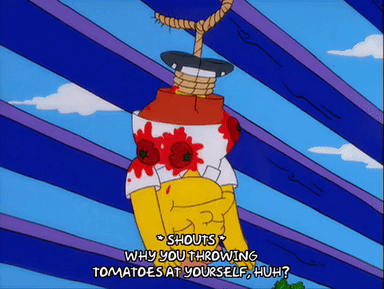

Act IV - All Work and No Play makes XSS
How long have we been studying the security of these electric sheep? And yet, we’re still here in our apartment, “bleeding out digging deeper, just to throw it away”.
Mom: Go play outsiiiide! Stop being a nerd and go play with real people!
Us: I don’t…
Wait a second… we live alone in this apartment…
It’s really time to go out before it’s too late. Plus, there’s a conference on Cybersecurity in town.
Yeee, HookLand!
We walk in and get to the registration desk. A bold guy with his white head is talking with Clerk, the guy at the registration desk. We overhear something like “this process is… and reality has…”. Why are they chatting while we wait?! Who cares about registration! We sneak in the conference room and sit in the back. In a few minutes, the first speaker is announced.
Chair: Good afternoon, everyone! It is a pleasure to welcome our first speaker, Professor Patrikal Mann from HaitchIndex University. As you know, he’s famous for the discovery of The Firewall technology that we all use to close closed ports and to open opened ports as brilliantly explained in LifeOverflow.
Audience: CLAP! CLAP! CLAP! CLAP!
Us: What the…
Presentation title: A few thoughts on XSS.
Prof. Mann: Thanks! After the great success of The Firewall, I decided to illuminate you on another important topic. Today, I’m going to enlighten you on XSS, or Cross-Site Scripting.
Audience murmuring: woooa! Me likey XSS.
Prof. Mann: Cross-Site Scripting refers to a class of security flaws (a.k.a. vulnerabilities) where an attacker can execute malicious client-side code on a web page by taking advantage of another user’s session. This means that when a website is vulnerable to an XSS, an attacker can run some code on your browser!!!
Audience murmuring: Oh no! I won’t use browsers anymore! I’ll use Internet Exploder instead!
Prof. Mann: Many of you will probably agree on this definition,
Us: Excuse me?! That definition contains important other definitions we don’t really know or agree on. What is a “vulnerability”? And what is a “class of vulnerabilities”? You also said: “taking advantage of another user’s session”, is this necessary?
Prof. Mann: Good observation my young padawan! 10 points to Gryffindor! That is why XSS must be divided into 3 types!
- Stored XSS
- Reflected XSS
- DOM-Based XSS
Us: …. but, really ….
Prof. Mann: There’re, obviously, other very important categories such as self-xss and mXSS, but those categories are too great and complex for this talk. For those of you who dare, here you can reach the last step of enlightenment as defined by me.

Prof. Mann: Stored XSS happens whenever the malicious client-side code is saved somewhere in the backend and retrieved and executed by a victim user.
Us, thinking: Oh, I see, it’s the usual case when you register a new user with name “” and then you log-in into a page that “visualizes” your name, opening an alert box!
Prof. Mann: Reflected XSS happens whenever the malicious client-side code is not saved by the web application but is “reflected” within a web page.
Us, thinking: Sure, that’s, for example, when I fill in a form searching for “” and then the page “visualizes” the entry you searched for.
Specchio Riflesso chi lo dice sa di esserlo.[*]
[*]the title “Specchio Riflesso chi lo dice sa di esserlo.” is in Italian and refers to a childish mockery like “boing flip”

Us: Excuse me?! Why having the malicious client-side code stored or not stored is so important that we categorize XSS into two different categories?
Chair: Questions at the end, please!
Prof. Mann: Legitimate question! The answer, according to many, is on how much dangerous one is in comparison with the other. Specifically, Stored XSS is more dangerous than Reflected XSS.
Us: And why is that?
Prof. Mann: Because with Stored XSS, the attacker can store the malicious code directly within the website, without even interacting with the user-victim. This increases the probability that another user of that website will end up executing the malicious code. In the case of a Reflected XSS, on the other hand, the attacker must somehow trick the user/victim into executing the malicious client-side code.
Us: Is this enough to have two different categories? And how did you compute that probability?
Prof. Mann: You are not the only one in this room, let also the other enjoy this talk! So, let you agree with me, for the sake of simplicity! And allow me to continue. Enters DOM-Based XSS!
Audience: CLAP! CLAP! CLAP!
Prof. Mann: To make the matter more interesting, I decided to create a third type of XSS that I called… DOM-Based XSS! What is DOM-Based XSS and why is it different from the other two, you might wonder. Is DOM-Based even more dangerous than the other two?
Audience: Lord, no!
Prof. Mann: DOM-Based XSS occurs when the malicious code is never sent to the backend and directly afflicts how the client-side code, loaded when visiting a web site, handles the input supplied by the user. For example, if you inject in a web page something like <image search=”non-existing-image.jpeg” onerror=alert(‘XSS’); /> the image doesn’t exist, so the onerror is triggered.
Audience, murmuring: Genius! Who could imagine injecting code that doesn’t even require an interaction with the server! Not even The Firewall can protect you from this! Simply genius!
Us: Excuse me?!
Audience, murmuring: Again?! Shhhh!
Us: Should we wait until you find all possible vulnerabilities in any system by trial and error, or can we jump to the part where you “teach us” how to protect our systems?
Prof. Mann: Sure! SHOWDOWN! Let me present you: The Web-application Firewall! It’s the greatest discovery after The Firewall! Hold tight! It’s a… The Firewall… for Webapps!
Audience:
Us: Excuse me! First, I don’t agree with your categorization and, second …
Prof. Mann: Please stop interrupting, come here and “show us” if you have something more than impudence!
Audience: Ugh! We will never get to the coffee break! Where is my free food?!
The Ingenious Gentleman of La Mancha
Us: Well… It seems to me that the malicious code is always retrieved from a user controllable input (which could be the URL bar or a window property) to alter the web page. Why would one of the categories presented be more dangerous than the other? I prepared a sketch of what Prof. Mann said here:

Audience: What is this? A joke? Where’s The Firewall? Nonsense!
Us: In this diagram, you see how to distinguish (and categorize) XSS based on the path that the injected code must follows. Reflected and Stored cannot be distinguished here. The distinction between those two can be appreciated if we can express causality between events.
Audience: Stop with this ad-hoc models! How do you know that your “models” are a faithful representation of reality!?
Us: My point is that we should not invent metrics based on our experience. We should really stop accepting talks on new useless attacks at HookLand and favour scientific theories instead. Check this out.
Us: Our theory in here predicts injections as weaknesses. An XSS is just an injection on a specific technology called JavaScript. To reason more universally on XSS, here is a minimal model where the XSS attack patterns, mistakenly called “XSS vulnerabilities” by Prof. Mann, can be expressed.
We take out from our pocket our last sketch.

Prof. Mann: This really seems ad-hoc!
Us: A model may be high-level but not necessary ad-hoc or un-realistic. When we model a system, we first describe the physical architecture with the physical components, ports and physical channels. In this case: the user (even if he’s a Boltzmann brain), the client machine, and the server machine. Like this:

Us: Then we describe the functional architecture (as before) as a set of interconnected functional elements, that is, without a predefined meaning. The connection between the two views is given by physical ports (present in both models).
Us: The functional architecture is “flat” … as if it were a frame of a movie of an evolving system, so we can analyze the flows only statically. And statically, the flows are telling us that there exist 2 attack patterns related to the injection weakness in this model. A dynamic view (of the whole movie-system) would allow us to predict other sub-categories of what Mann called reflected/stored XSS. These attack patterns can be predicted by looking at all possible injections points, given a finite model of the system. Summarizing, any system (even a Cyber-Physical electric sheep) is an aggregation of abstract architectures. Architectures come in two flavors (or views), the physical and the functional one; composed by physical channels and ports and functional blocks as building blocks of the behaviour of the system.
Prof. Mann: What I hear is mumbo jumbo!
Audience: Boooooo! Boooo!

Us: It’s a matter of Logic! Of its expressiveness, predicate, first-order, second-…
Hey You! Getting Lonely Getting Cold Can You Help Me?
We rushed out of the room… that wasn’t a success at all. We should have predicted it! At least we didn’t pay… They are also right; models and abstractions cannot be understood by practical men. But we’re almost done with the example where we predict vulnerabilities, such as buffer overflows, in C programs. Maybe that will convince them.
We reach the exit and the guy with the white head is coming towards us with Clerk, the guy at the reception desk.
White head guy: You are using my theory, hm?!
Clerk: it’s actually mine… I re-wrote your mess in 1981, remember?
Us: Well, I’m using your theories then. They seem to properly predict weaknesses and I’m almost ready to show an application to a piece of C code. But while it works pretty well on static views of a system, it doesn’t apply as easily to the dynamics of system interactions.
White head: you know I’m not a computer scientist, right?
Clerk: I see! Did you talk to Saul?
Us: Who?!
Clerk: Saul, the guy from Kripketon. He can help you out with the dynamic part. He can SPINroot your ideas.
Us: Never heard of him, but another guy from another planet… I think his name was Albert or Karl… told me that “I think […] that theory cannot be fabricated out of the results of observation, but that it can only be invented.” while the cleverest tomato thrower of the audience insisted on yelling “[…] your approach is too technical and should instead be rooted in empirical observation and a subsequent creation of theories rooted in those observations”. I’m not sure you guys from other worlds are good leaders, you should consider retirement.
Clerk: Nonsense! Let us all meet at your apartment tomorrow at lunch. And, please, take a shower!
End of Act IV.